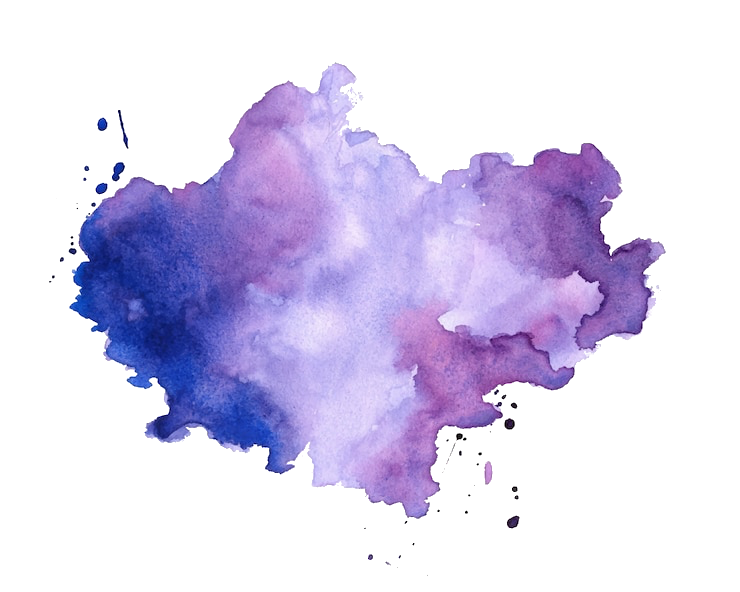

About Me
Watercolour painting
I started watercolour painting as the age of 15. My teacher was a renowned watercolourist, Sheila Santilano. She taught me to love my craft. I studied Graphic Design after school and spent almost 20 years in the magazine industry. I enjoy drawing, painting and sharing my skills with like-minded people with a passion to learn.
